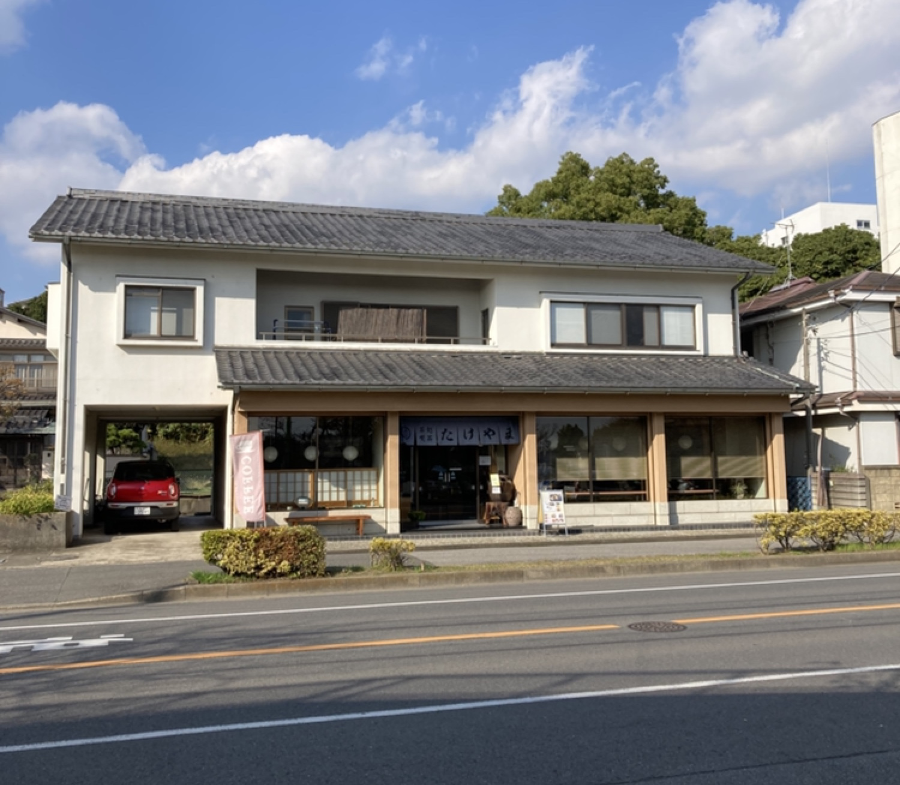

CONCEPT
たけやまのこだわり ― 和のひとときについて

撮影: 茶虎猫(Googleマップ)
佇まい
瓦屋根と白壁、紺の暖簾
瓦屋根と白壁が印象的な、伝統的な日本家屋。その入口には紺色の暖簾がかかり、「たけやま」の店名が染め抜かれています。通りを歩く中でふと目に留まる、静かなたたずまいです。
店内の設え
障子と提灯が灯す、和の空間
店内に一歩入ると、障子越しのやわらかな光と、和紙の丸提灯の灯りが迎えてくれます。派手さはありませんが、そのぶん肩の力が抜けるような落ち着きがあります。甘味やお食事、コーヒーを味わいながら、ゆっくりと時間を過ごしていただける空間です。


提供スタイル
和と洋が、同じ屋根の下で
抹茶や和菓子に代表される甘味処としての顔と、コーヒーや焼き菓子を楽しむ喫茶としての顔。茶処喫茶 たけやまでは、この二つが一つの空間の中で自然に共存しています。その日の気分に合わせて、和のひとときも、洋のひとときも選べること。それが、たけやまらしい過ごし方です。